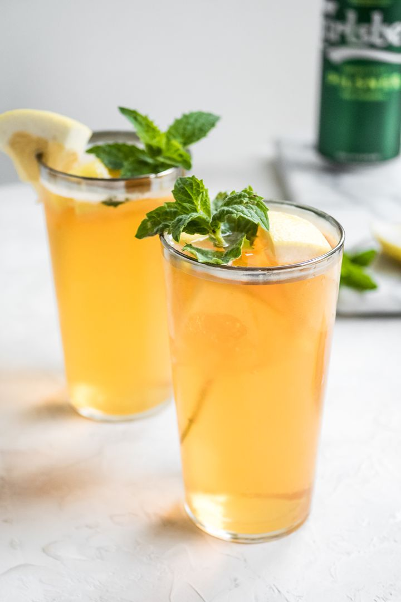

Grapefruit Shandy

Description
A Grapefruit Shandy is an excellent drink to have when thirsty on a random hot day in summer
As it is very refreshing, it is something everyone should at least try when they are craving something good and thirst quenching.
Ingrediants
- 4 ounces light wheat beer, chilled
- 3 ounces grapefruit juice or soda, chilled
- Fresh grapefruit slice, for garnish
- Fresh mint sprig, for garnish
Steps
- In a 12-ounce glass, pour in the beer and grapefruit juice or soda
- Gently stir to Combine
- Garnish with a grapefruit slice and mint, if desired. Serve cold.